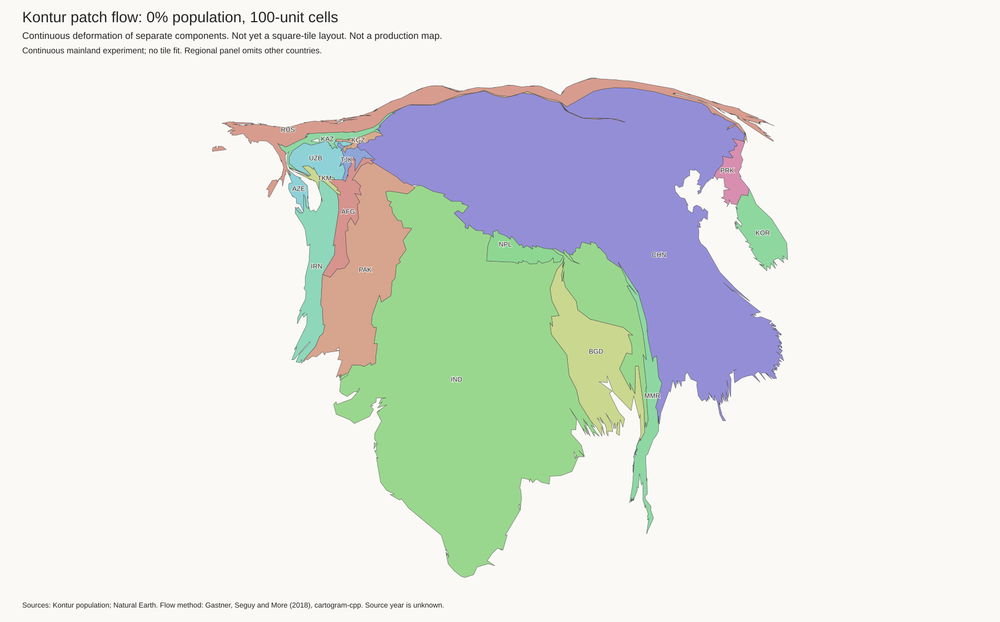
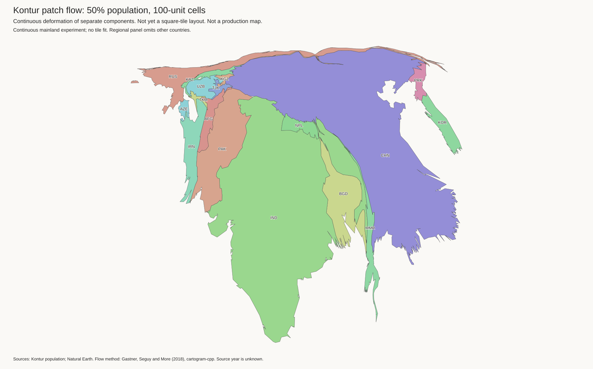
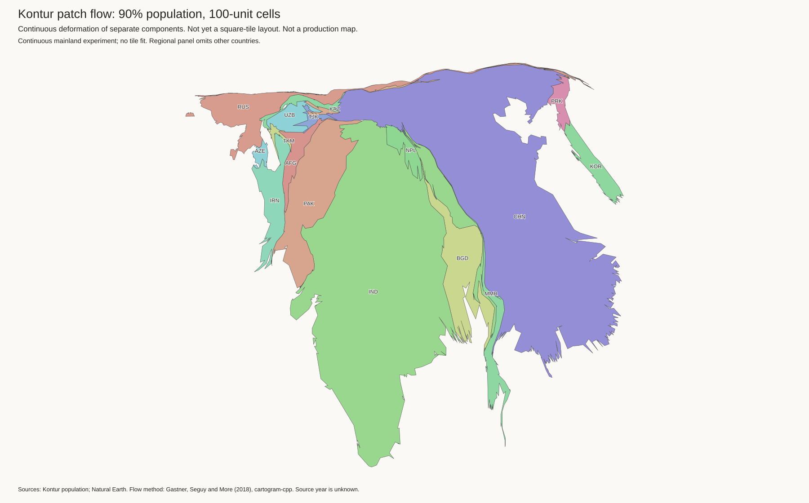
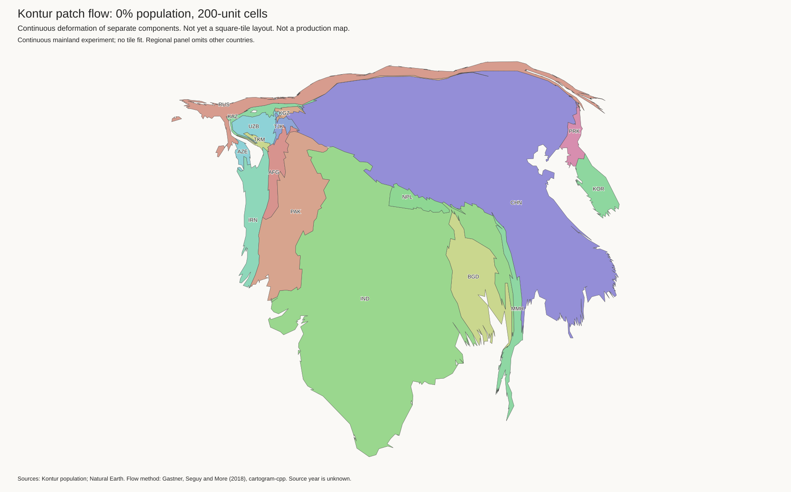
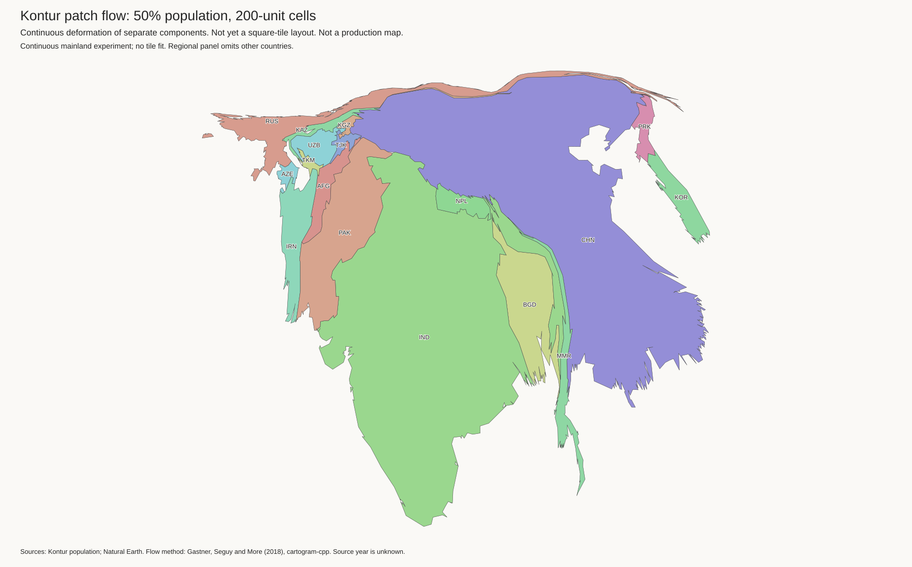
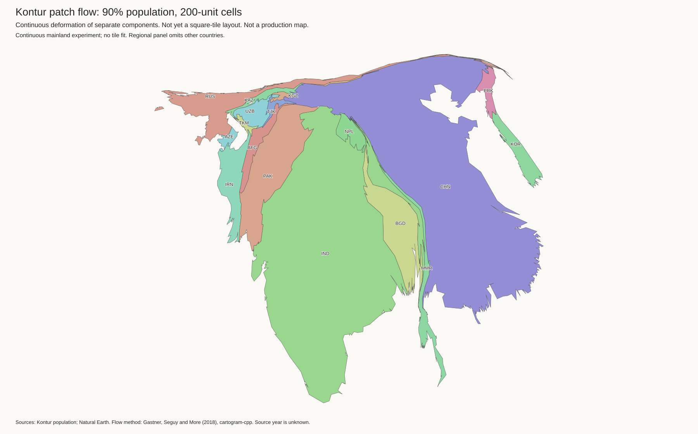

Six continuous-fit experiments completed. These are not replacement tile maps. The existing island-and-lake layout and H3-MON population exports are unchanged.
The old flow input specifies a population total per component, but no internal density. These tests divide each mainland component into coarse patches and give each patch its own target area from Kontur H3-5 population. The patches remain part of the same continuous fit. We then remove the artificial internal borders for display.
Each resolution has three runs on identical patch geometry:
The supplied patch targets sum to the existing component target. Population stays within its assigned component. This test does not pool overseas islands with their countries. The fit covers the same 189 components as the earlier mainland flow: 7,221,236,218 people. Isolated landmasses, including Australia and Japan, are outside this experiment. It is not a complete world tile layout.
Click an image for full resolution. Each panel is scaled to fit.

Global mainland view
Global mainland view
Global mainland view
Global mainland view
Global mainland view
Global mainland viewThe method works: western Russia gains area and sparsely populated eastern Russia becomes thinner. The strong finer-grid run improves Russia's outline score substantially. But China becomes more vertical, and the Kazakhstan compression remains. India also loses outline similarity. All six Eurasia panels and the strong finer-grid global view were checked visually.
Internal population detail is useful, but it does not by itself solve the geographic problem. Continuous adjacency still leaves long thin parts where population is sparse. No sparse borders were cut in these tests.
| Grid / Kontur share | Russia | China | India | Kazakhstan |
|---|---|---|---|---|
| Coarser / 0% | 0.880 | 0.444 | 0.380 | 0.698 |
| Coarser / 50% | 0.871 | 0.602 | 0.404 | 0.749 |
| Coarser / 90% | 0.728 | 0.670 | 0.444 | 0.787 |
| Finer / 0% | 0.896 | 0.436 | 0.382 | 0.669 |
| Finer / 50% | 0.849 | 0.604 | 0.410 | 0.732 |
| Finer / 90% | 0.612 | 0.691 | 0.463 | 0.822 |
Scores are one minus outline intersection-over-union with the original Equal Earth outline, after area scaling and centroid alignment. Lower is better. These measure outline similarity, not whether population is represented faithfully. The added internal boundaries can change numerical behaviour. Compare each density run with its own subdivided control, not only with the old unsplit flow.
The installed solver raises very small target areas below 0.0001 of the total. Uncorrected subdivision therefore inflated some component areas. The final experiments use one shared patch geometry per resolution, merged until every blend clears that floor where possible. Entire components below the floor remain unsplit. Early trials also exposed a CSV parser restriction: area values must use fixed-point notation, not scientific notation.
The prototype is small because the existing solver already accepts a target area for each GeoJSON region. A production version needs more work: exact tile budgets, shape limits, border checks, and the existing island-and-lake rules. The next useful test is to combine coarse density with shape constraints and selective sparse-border release upstream, rather than use these outlines unchanged.
PYTHONDONTWRITEBYTECODE=1 output/auto-cartogram/geometry-env/bin/python \ examples/auto-cartogram/kontur_subregion_flow.py \ output/auto-cartogram NEW_OUTPUT --cell-size 100 # Repeat with --cell-size 200.
Comparison and geometry checks · Artifact hashes
Each blend directory also contains compressed areas.csv,
areas_input_processed.csv, components.geojson, and
solver.log files. They record both requested areas and solver adjustments.
Method reference: cartogram-cpp documentation. The input format was checked against its current README and the installed CLI help. See also the original pinch-point investigation.